svg-pcb test
last edited: 2022.09.20
This week is the start of some electronics! Eventual goal is to make a little phenakistoscope turntable.
As an added bit of fun, I want to try to use
svg-pcb
to make my boards-- the paper is coming at SCF '22, and it is similar to an idea I had to implement for p5.fab with
the Othermill.
test board
To get a feel for svg pcb, I messed around with the editor and made the simplest possible test board:
an LED + resistor. To get a sense of what the code looks like:
/* -- DECLARE_COMPONENTS -- */
const LED_1206 = {"A":{"shape":"M -0.03699999999999999 0.03400000000000001L 0.027000000000000007 0.03400000000000001L 0.027000000000000007 -0.033999999999999996L -0.03699999999999999 -0.03400000000000001L -0.037000000000000005 0.033999999999999996","pos":[-0.055,0],"layers":["F.Cu"],"index":1},"C":{"shape":"M -0.026999999999999993 0.03400000000000001L 0.037000000000000005 0.03400000000000001L 0.037000000000000005 -0.033999999999999996L -0.026999999999999993 -0.03400000000000001L -0.027000000000000007 0.033999999999999996","pos":[0.055,0],"layers":["F.Cu"],"index":2}};
const R_1206 = {"1":{"shape":"M -0.031999999999999994 0.03400000000000001L 0.03200000000000001 0.03400000000000001L 0.03200000000000001 -0.033999999999999996L -0.031999999999999994 -0.03400000000000001L -0.03200000000000001 0.033999999999999996","pos":[-0.06,0],"layers":["F.Cu"],"index":1},"2":{"shape":"M -0.031999999999999994 0.03400000000000001L 0.03200000000000001 0.03400000000000001L 0.03200000000000001 -0.033999999999999996L -0.031999999999999994 -0.03400000000000001L -0.03200000000000001 0.033999999999999996","pos":[0.06,0],"layers":["F.Cu"],"index":2}};
const headers_01x02 = (() => { return kicadToObj(
`(module PinHeader_1x02_P2.54mm_Horizontal (layer F.Cu) (tedit 59FED5CB)
(descr "Through hole angled pin header, 1x02, 2.54mm pitch, 6mm pin length, single row")
(tags "Through hole angled pin header THT 1x02 2.54mm single row")
(fp_text reference REF** (at 4.385 -2.27) (layer F.SilkS)
(effects (font (size 1 1) (thickness 0.15)))
)
(fp_text value PinHeader_1x02_P2.54mm_Horizontal (at 4.385 4.81) (layer F.Fab)
(effects (font (size 1 1) (thickness 0.15)))
)
(fp_line (start 2.135 -1.27) (end 4.04 -1.27) (layer F.Fab) (width 0.1))
(fp_line (start 4.04 -1.27) (end 4.04 3.81) (layer F.Fab) (width 0.1))
(fp_line (start 4.04 3.81) (end 1.5 3.81) (layer F.Fab) (width 0.1))
(fp_line (start 1.5 3.81) (end 1.5 -0.635) (layer F.Fab) (width 0.1))
(fp_line (start 1.5 -0.635) (end 2.135 -1.27) (layer F.Fab) (width 0.1))
(fp_line (start -0.32 -0.32) (end 1.5 -0.32) (layer F.Fab) (width 0.1))
(fp_line (start -0.32 -0.32) (end -0.32 0.32) (layer F.Fab) (width 0.1))
(fp_line (start -0.32 0.32) (end 1.5 0.32) (layer F.Fab) (width 0.1))
(fp_line (start 4.04 -0.32) (end 10.04 -0.32) (layer F.Fab) (width 0.1))
(fp_line (start 10.04 -0.32) (end 10.04 0.32) (layer F.Fab) (width 0.1))
(fp_line (start 4.04 0.32) (end 10.04 0.32) (layer F.Fab) (width 0.1))
(fp_line (start -0.32 2.22) (end 1.5 2.22) (layer F.Fab) (width 0.1))
(fp_line (start -0.32 2.22) (end -0.32 2.86) (layer F.Fab) (width 0.1))
(fp_line (start -0.32 2.86) (end 1.5 2.86) (layer F.Fab) (width 0.1))
(fp_line (start 4.04 2.22) (end 10.04 2.22) (layer F.Fab) (width 0.1))
(fp_line (start 10.04 2.22) (end 10.04 2.86) (layer F.Fab) (width 0.1))
(fp_line (start 4.04 2.86) (end 10.04 2.86) (layer F.Fab) (width 0.1))
(fp_line (start 1.44 -1.33) (end 1.44 3.87) (layer F.SilkS) (width 0.12))
(fp_line (start 1.44 3.87) (end 4.1 3.87) (layer F.SilkS) (width 0.12))
(fp_line (start 4.1 3.87) (end 4.1 -1.33) (layer F.SilkS) (width 0.12))
(fp_line (start 4.1 -1.33) (end 1.44 -1.33) (layer F.SilkS) (width 0.12))
(fp_line (start 4.1 -0.38) (end 10.1 -0.38) (layer F.SilkS) (width 0.12))
(fp_line (start 10.1 -0.38) (end 10.1 0.38) (layer F.SilkS) (width 0.12))
(fp_line (start 10.1 0.38) (end 4.1 0.38) (layer F.SilkS) (width 0.12))
(fp_line (start 4.1 -0.32) (end 10.1 -0.32) (layer F.SilkS) (width 0.12))
(fp_line (start 4.1 -0.2) (end 10.1 -0.2) (layer F.SilkS) (width 0.12))
(fp_line (start 4.1 -0.08) (end 10.1 -0.08) (layer F.SilkS) (width 0.12))
(fp_line (start 4.1 0.04) (end 10.1 0.04) (layer F.SilkS) (width 0.12))
(fp_line (start 4.1 0.16) (end 10.1 0.16) (layer F.SilkS) (width 0.12))
(fp_line (start 4.1 0.28) (end 10.1 0.28) (layer F.SilkS) (width 0.12))
(fp_line (start 1.11 -0.38) (end 1.44 -0.38) (layer F.SilkS) (width 0.12))
(fp_line (start 1.11 0.38) (end 1.44 0.38) (layer F.SilkS) (width 0.12))
(fp_line (start 1.44 1.27) (end 4.1 1.27) (layer F.SilkS) (width 0.12))
(fp_line (start 4.1 2.16) (end 10.1 2.16) (layer F.SilkS) (width 0.12))
(fp_line (start 10.1 2.16) (end 10.1 2.92) (layer F.SilkS) (width 0.12))
(fp_line (start 10.1 2.92) (end 4.1 2.92) (layer F.SilkS) (width 0.12))
(fp_line (start 1.042929 2.16) (end 1.44 2.16) (layer F.SilkS) (width 0.12))
(fp_line (start 1.042929 2.92) (end 1.44 2.92) (layer F.SilkS) (width 0.12))
(fp_line (start -1.27 0) (end -1.27 -1.27) (layer F.SilkS) (width 0.12))
(fp_line (start -1.27 -1.27) (end 0 -1.27) (layer F.SilkS) (width 0.12))
(fp_line (start -1.8 -1.8) (end -1.8 4.35) (layer F.CrtYd) (width 0.05))
(fp_line (start -1.8 4.35) (end 10.55 4.35) (layer F.CrtYd) (width 0.05))
(fp_line (start 10.55 4.35) (end 10.55 -1.8) (layer F.CrtYd) (width 0.05))
(fp_line (start 10.55 -1.8) (end -1.8 -1.8) (layer F.CrtYd) (width 0.05))
(pad 1 thru_hole rect (at 0 0) (size 1.7 1.7) (drill 1.0) (layers *.Cu *.Mask))
(pad 2 thru_hole oval (at 0 2.54) (size 1.7 1.7) (drill 1.0) (layers *.Cu *.Mask))
(fp_text user %R (at 2.77 1.27 90) (layer F.Fab)
(effects (font (size 1 1) (thickness 0.15)))
)
(model {KISYS3DMOD}/Connector_PinHeader_2.54mm.3dshapes/PinHeader_1x02_P2.54mm_Horizontal.wrl
(at (xyz 0 0 0))
(scale (xyz 1 1 1))
(rotate (xyz 0 0 0))
)
)`)})()
/* -- DECLARE_PCB -- */
let board = new PCB();
let interior = new Turtle().rectangle(0.56, 0.32)
.translate([0.41, 0.54])
.roundcorners(0.07);
board.addShape("interior", interior);
/* -- ADD_COMPONENTS -- */
J1 = board.add(headers_01x02, {translate: [0.25, 0.6], name: "J1"})
R1 = board.add(R_1206, {translate: [0.5, 0.6], name: "R1"})
LED = board.add(LED_1206, {translate: [0.5, 0.5], name: "D1"})
/* -- ADD_WIRES -- */
board.wire([J1.pad(1), R1.pad(1)], 0.015);
board.wire([R1.pad(2), LED.pad('C')], 0.015);
board.wire([LED.pad('A'), J1.pad(2)], 0.015);
/* -- RENDER_PCB -- */
renderPCB({
pcb: board,
layerColors: {
"interior": "#002d00ff",
"B.Cu": "#ff4c007f",
"F.Cu": "#ff8c00cc",
"drill": "#ff3300e5",
"padLabels": "#ffff99e5",
"componentLabels": "#00e5e5e5",
},
limits: {
x: [0, 1],
y: [0, 1]
},
mm_per_unit: 25.4
})
which generates the following SVG:

simplest pcb svg
reflections & notes
I think I might really get along with svg-pcb, especially once I put together a working environment
which has all the kicad components I need. It will need to be passed to
mods for fabrication... I think there's still a place here for p5.fab to create milling toolpaths and
send directly to the machine, especially if I can incorporate kicad components there.